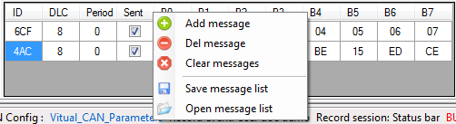
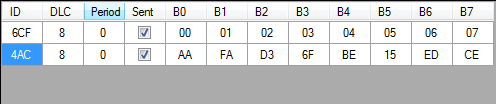

To send ‘Raw' CAN messages over the bus, you first need to define those messages. Click the ‘CAN Configuration\ Raw messages Tx' menu to get the raw messages management functions.

Alternatively, right click in the raw message grid to open the creation menu.

This contextual menu contains a bunch of commands to manage the raw message list.
 Add message: Add a message in the list.
Add message: Add a message in the list.
Del message: Remove a message from the list.
 Clear messages: Remove all messages of the list.
Clear messages: Remove all messages of the list.
 Save: Save the message list in a file.
Save: Save the message list in a file.
Open: Open a message list file.
Once messages have been loaded or created it is possible to set their properties in the different cells of the grid.

If the property ‘Period' is set to zero, message is not sent over.
Created with the Personal Edition of HelpNDoc: Single source CHM, PDF, DOC and HTML Help creation